All-aqueous microfluidics, coacervate droplets, and the soft-matter physics of liquid–liquid phase separation.全水相微流控 · 凝聚液滴 · 液–液相分离的软物质物理
Principal investigators — Tiantian Kong · Zhou Liu · Cheng Qi · Bin Kong课题组 PI —— 孔湉湉 · 刘洲 · 齐成 · 孔彬
The Microfluidics & Soft Matter Group at Shenzhen University studies the soft-matter physics of complex aqueous systems — engineering all-aqueous droplets, coacervates, and liquid–liquid phase separation into functional and living materials.
深圳大学微流控与软物质课题组研究复杂水相体系的软物质物理，将全水相液滴、凝聚液滴与液–液相分离（LLPS）工程化为功能材料与生命材料。
Working across chemical engineering, mechanics, and medicine, the group builds all-aqueous microfluidic and embedded 3D-printing platforms to construct synthetic cells, vascularized tissues, organ-on-chip devices, and flexible bioelectronics.
研究立足化学工程、力学与医学的交叉，发展全水相微流控与嵌入式 3D 生物打印平台，用以构建人工细胞、血管化组织、器官芯片与柔性生物电子。
The group brings together four principal investigators — Tiantian Kong, Zhou Liu, Cheng Qi, and Bin Kong — and around forty researchers, including research associates, postdoctoral fellows, and graduate students across biomedical engineering, chemistry, and mechatronics, who run the lab as one team.
课题组汇聚孔湉湉、刘洲、齐成、孔彬四位 PI，以及约四十名研究人员（副研究员、博士后与研究生），横跨生物医学工程、化学与机电等学科，作为一个团队协同工作。
Oil-free, fully aqueous microfluidics for the gentle, biocompatible generation of droplets, jets, and compartments — the foundation for building cell-friendly materials from water-in-water systems.
无油、全水相的微流控体系，温和且生物相容地产生液滴、射流与微室，是从"水包水"体系构建细胞友好材料的基础。
The soft-matter physics of coacervate droplets and LLPS — interfacial tension, wetting, and structuring — used as a design substrate for membraneless compartments and synthetic organelles.
凝聚液滴与液–液相分离的软物质物理——界面张力、润湿与结构化——作为无膜微室与人工细胞器的设计基底。
Freeform printing of aqueous inks inside aqueous baths to fabricate biomimetic, perfusable 3D constructs and interconnected vascular networks.
在水相支撑浴中自由打印水相墨水，制造仿生、可灌注的三维结构与互连血管网络。
Multi-compartment protocells assembled from coacervates and all-aqueous droplets, with life-like functions such as compartmentalization, capture, and reaction.
由凝聚液滴与全水相液滴组装的多室原细胞，具备区室化、捕获与反应等类生命功能。
Microfluidic organoid and organ-on-chip platforms that bridge material design with developmental and clinical questions.
微流控类器官与器官芯片平台，连接材料设计与发育、临床问题。
Tough, adhesive, stretchable hydrogels and microfibers for implantable sensors, supercapacitors, and wearable bioelectronics.
强韧、粘附、可拉伸的水凝胶与微纤维，用于可植入传感器、超级电容与可穿戴生物电子。
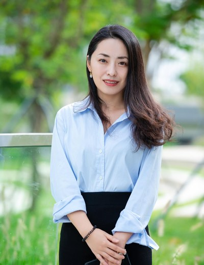
Tiantian Kong · 孔湉湉
Distinguished Professor · School of Biomedical Engineering, SZU深圳大学医学部 生物医学工程学院 特聘教授 · 博导
PhD (2013) and postdoctoral training at the University of Hong Kong with Liqiu Wang and Anthony Shum. Research: coacervates, liquid–liquid phase separation, and all-aqueous microfluidics as a route to synthetic cells, vascularized tissues, and functional materials.2013 年于香港大学获博士学位，师从王立秋、岑浩璋教授并完成博士后研究。研究：凝聚体、液–液相分离与全水相微流控，用以构建人工细胞、血管化组织与功能材料。
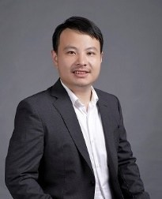
Zhou Liu · 刘洲
Associate Professor · College of Chemistry & Environmental Engineering, SZU深圳大学 化学与环境工程学院 副教授 · 博导 · 特聘研究员
BEng, Huazhong University of Science and Technology (Energy & Power Engineering); PhD and postdoc, University of Hong Kong (Mechanical Engineering, with Anderson Shum); joined SZU in 2016. Research: microfluidics, fluid physics, and soft-matter materials for biomedical applications, with 30+ first/corresponding-author papers (h-index 26) in Nature Communications, Advanced Materials, Adv. Funct. Mater., Angew. Chem., and ACS Nano.本科毕业于华中科技大学能源与动力工程专业，博士与博士后于香港大学机械工程系（师从岑浩璋 Anderson Shum），2016 年入职深圳大学化学与环境工程学院。研究：微流控技术、流体物理与软物质材料及其生物医学应用，以第一 / 通讯作者在 Nature Communications、Advanced Materials、Adv. Funct. Mater.、Angew. Chem.、ACS Nano 等发表论文 30 余篇（H 指数 26）。
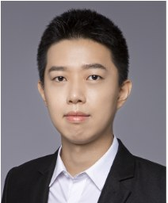
Cheng Qi · 齐成
Associate Professor & Associate Researcher · College of Mechatronics & Control Engineering, SZU深圳大学 机电与控制工程学院 副教授 · 副研究员
PhD, University of Hong Kong (Mechanical Engineering, 2016); BEng in Naval Architecture & Ocean Engineering, Huazhong University of Science and Technology; postdoctoral research at HKU. Research directions: intelligent magnetic-control systems and micro soft robots; AI-assisted microfluidic-chip development; and micro-/nano-fabrication for biomedical engineering. First/corresponding-author papers in Nature Communications, Advanced Materials, ACS Nano, Advanced Science, Applied Physics Letters, and Science Bulletin.香港大学机械工程系博士（2016），华中科技大学船舶与海洋工程系学士，并于港大从事博士后研究。研究方向：智能磁控系统与微型软体机器人；人工智能辅助微流控芯片开发；面向医工交叉的微纳制造技术。以第一 / 通讯作者在 Nature Communications、Advanced Materials、ACS Nano、Advanced Science、Applied Physics Letters、《科学通报》（英文版）等发表论文。
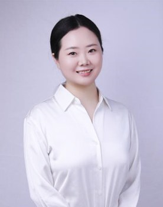
Bin Kong · 孔彬
Assistant Professor & Distinguished Research Fellow · School of Biomedical Engineering, SZU深圳大学医学部 生物医学工程学院 助理教授 · 特聘研究员
PhD, Tsinghua University (advisor: Wei Sun); visiting scholar at UC Berkeley. Research: biofabrication and regenerative medicine, with 43+ first/corresponding-author (incl. co-) SCI papers in journals including Nature Communications, Science Advances, Adv. Funct. Mater., ACS Nano, Adv. Sci., Nano Today, and Bioactive Materials.清华大学博士（导师：孙伟），美国加州大学伯克利分校访问学者。研究：生物制造与再生医学，以第一 / 通讯作者（含共同）发表 SCI 论文 43 余篇，见于 Nature Communications、Science Advances、Adv. Funct. Mater.、ACS Nano、Adv. Sci.、Nano Today、Bioactive Materials 等。
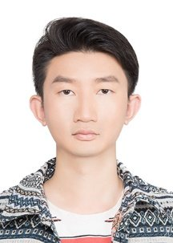
Si Meng · 孟思
Associate Researcher · College of Chemistry & Environmental Engineering, SZU深圳大学 化学与环境工程学院 副研究员
Shenzhen High-level Talent; trained with Academician Meifang Zhu (Donghua University). Research: fiber fabrication and structural design, smart wearables, and bioscaffold materials, with 20+ first/corresponding-author papers in Adv. Funct. Mater., Biomaterials, Nano Research, Small, and Small Methods, and co-author of two fiber-science monographs.深圳市高层次人才；师从东华大学朱美芳院士。研究：纤维的制备与结构设计、智能可穿戴、生物支架材料，以第一 / 通讯作者在 Adv. Funct. Mater.、Biomaterials、Nano Research、Small、Small Methods 等发表论文 20 余篇，参与编写纤维领域重要专著两部。
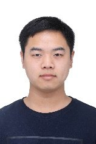
Xiaokang Deng · 邓小康
Research Associate副研究员
Research: all-aqueous embedded 3D printing, aqueous two-phase hydrogel microspheres, and stem-cell microcarriers; first-author paper in Advanced Materials (2024).研究：全水相嵌入式 3D 打印、双水相水凝胶微球、干细胞微载体；一作论文见 Advanced Materials（2024）。
陈泰格 · Taige Chen
Research Associate副研究员
Research: biofabrication and regenerative medicine.研究：生物制造与再生医学。
吴昊 · Hao Wu
Postdoctoral Fellow博士后
Research: bottom-up protocells and prototissue assembly, mechanics, mechanical metamaterials, and microfluidics.研究：自下而上人工原细胞与原组织组装、力学、机械超材料与微流控。
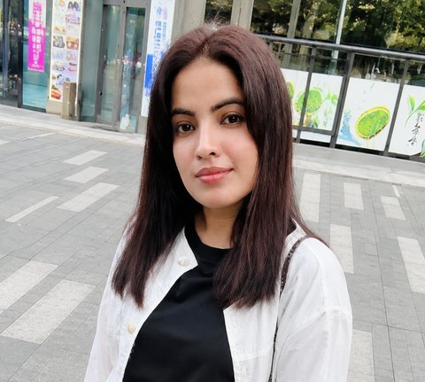
Mehwish Naz
Postdoctoral Fellow博士后
Research: chemical synthesis of biopolymers; protocell and prototissue fabrication, microencapsulation, stimuli-responsive materials, bio-inspired actuators, and soft robots.研究：生物聚合物的化学合成；人工原细胞与原组织制造、微囊化、刺激响应材料、仿生驱动器与软体机器人。
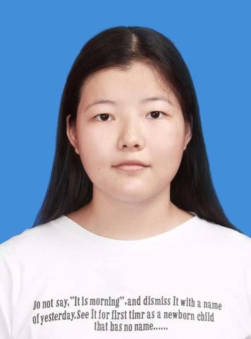
马敬
2021级
PhD Student博士生
Instability-driven 3D bioprinting & aqueous two-phase microcapsules失稳驱动 3D 生物打印与双水相微囊
邱齐杰
2021级
PhD Student博士生
Flexible tactile sensing & microfluidic ultrasensitive detection柔性触觉传感与微流控超灵敏检测
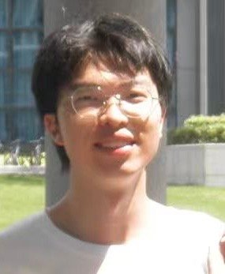
欧浩晖
2023级
PhD Student博士生
AI-driven microfluidics for coacervate dropletsAI 驱动的凝聚液滴微流控
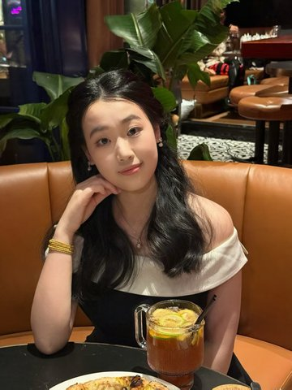
尧琴
2024级
PhD Student博士生
Coacervates & extracellular vesicles凝聚体与细胞外囊泡
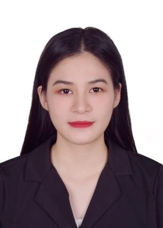
陈小明
2025级
PhD Student博士生
Intelligent magnetic control & micro soft robots智能磁控与微型软体机器人
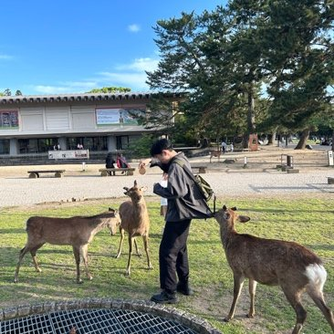
楚浪
2025级
PhD Student博士生
Soft matter软物质
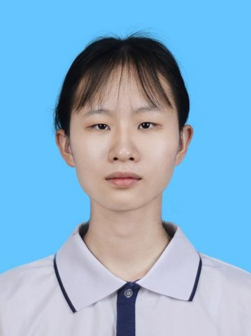
徐康玲
2026级
PhD Student博士生
Coacervates & all-aqueous microfluidics凝聚体与全水相微流控
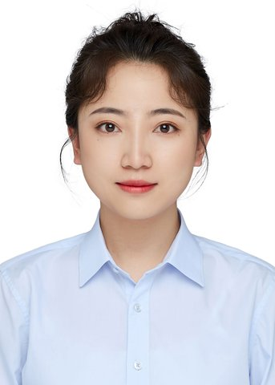
张苏苏
2026级
PhD Student博士生
Biofabrication & regenerative medicine生物制造与再生医学
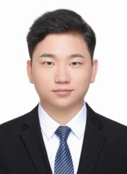
刘凯浪
2026级
PhD Student博士生
Magnetically controlled coacervates & enzyme kinetics in condensates磁控凝聚体与凝聚液滴酶动力学
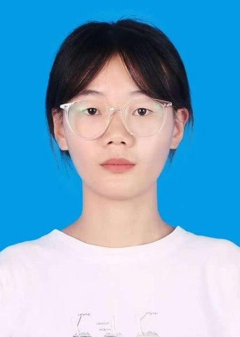
丁奥敏
2024级
Master's Student硕士生
Coacervate droplets & liquid–liquid phase separation凝聚液滴与液–液相分离
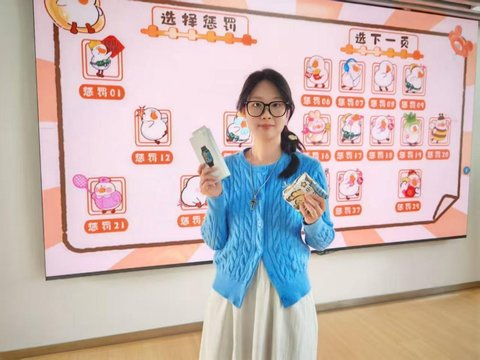
刘叶芊
2024级
Master's Student硕士生
Organoid vascularization类器官血管化
沈佩贝
2024级
Master's Student硕士生
Small-molecule partitioning in condensates & drug-delivery carriers凝聚体内小分子分配与药物递送载体
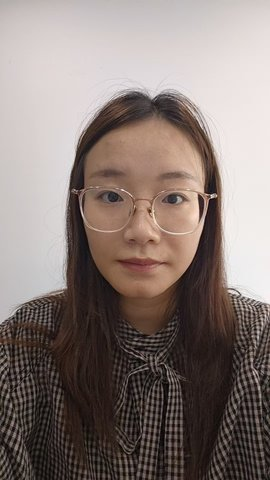
汪惠娴
2024级
Master's Student硕士生
Light-responsive coacervate droplets光响应凝聚液滴
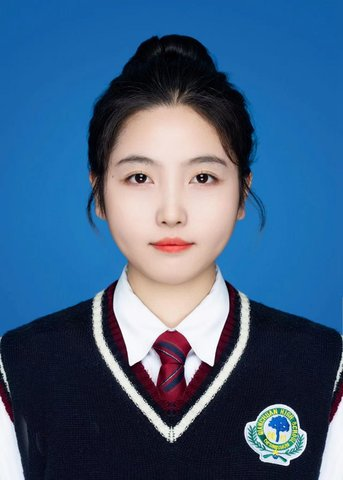
王红娟
2024级
Master's Student硕士生
Enrichment function of coacervate droplets凝聚液滴富集功能研究
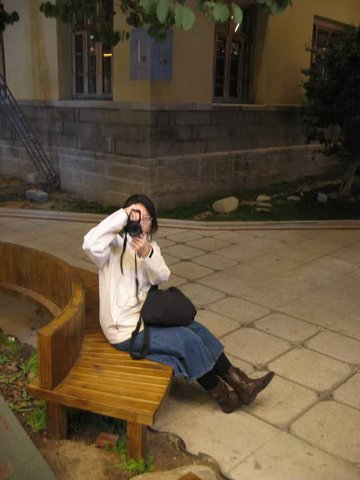
赵倩倩
2024级
Master's Student硕士生
Artificial cells人工细胞
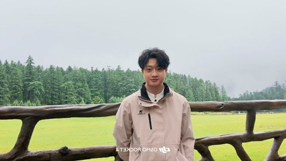
鲍捷
2024级
Master's Student硕士生
Automated reactors for microdroplet chemistry面向微液滴化学的自动化反应器
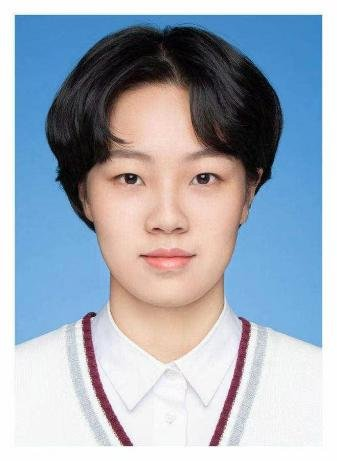
张佳宋
2024级
Master's Student硕士生
Microfluidics微流控
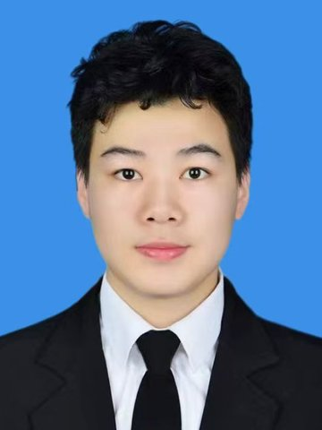
金刚
2024级
Master's Student硕士生
Magnetically controlled soft robots磁控软体机器人
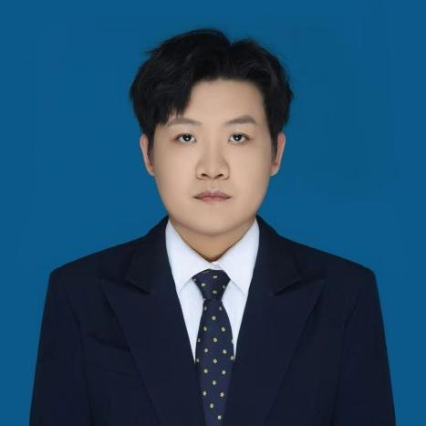
关浩卿
2025级
Master's Student硕士生
Dynamic-curvature cues for mesenchymal stem cells动态曲率结构对间充质干细胞的影响
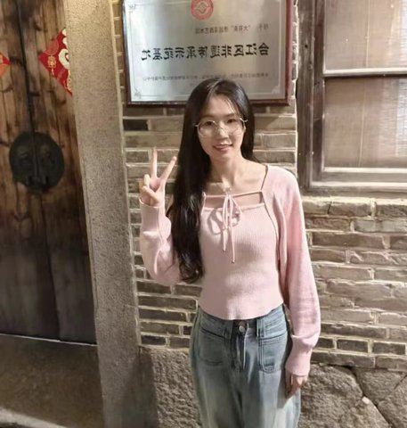
霍飘琴
2025级
Master's Student硕士生
All-aqueous embedded 3D printing全水相嵌入式 3D 打印
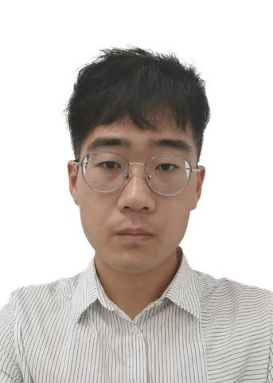
裴新生
2025级
Master's Student硕士生
Magnetically controlled soft robots磁控软体机器人
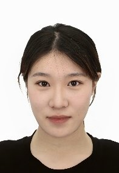
宋昱洁
2025级
Master's Student硕士生
Coacervate droplets & liquid–liquid phase separation凝聚液滴与液–液相分离
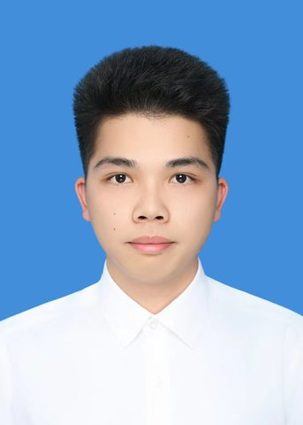
杨金权
2025级
Master's Student硕士生
Embodied-intelligence droplet robots具身智能液滴机器人
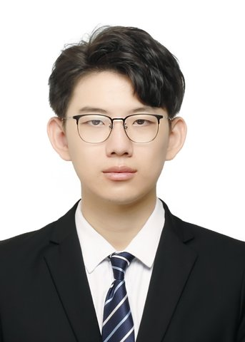
于舒铭
2025级
Master's Student硕士生
Two-dimensional interfacial instabilities二维界面不稳定现象
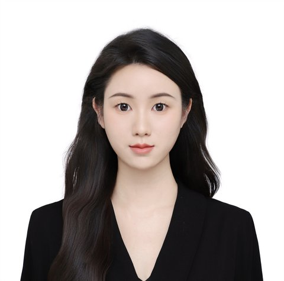
陈沐禾
2025级
Master's Student硕士生
Interfacial-tension-driven microdroplet fabrication界面张力驱动微液滴制造
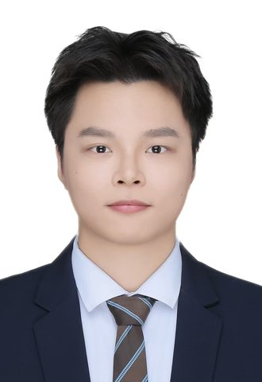
吴基锋
2025级
Master's Student硕士生
Coacervates凝聚体
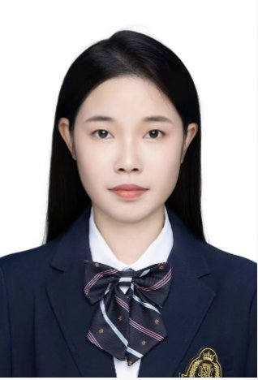
肖秋香
2025级
Master's Student硕士生
Nanofiber yarns for wearable strain sensors纳米纤维纱线可穿戴应变传感
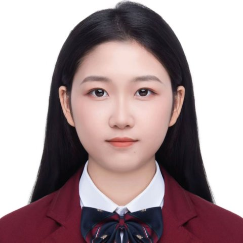
张馨雨
2025级
Master's Student硕士生
Microfluidics微流控
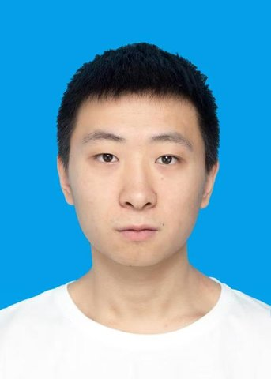
郎霄峰
2025级
Master's Student硕士生
Control systems & convex optimization控制系统与凸优化
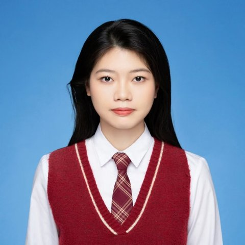
陈欣怡
2026级
Master's Student硕士生
New student新生
何子炀
2026级
Master's Student硕士生
New student新生
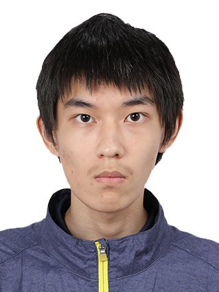
刘亦洲
2026级
Master's Student硕士生
New student新生
Pursuing PhDs at HK universities:赴港攻读博士： 马旭东、周涛、王依涵、杨铭、张姗姗、周慧、姚晓雪。
Graduated students & former members:毕业生与曾任成员： 岑超锋、陈敬元、陈柳成、陈奕焕、程博、池磊、杜伟翔、范璐、方捷伦、方秀雯、韩翔宇、黄元丁、黄章伟、黄芷瑶、李聪、李磊、李文俊、梁美玲、柳洋、刘萧、刘雅铭、卢燚、罗贯一、牟虹枚、彭程、瞿刚、冉昊晨、沈婴婷、汤鑫、汪志、王思全、王宇航、魏珊珊、魏誉添、吴迪文、吴霓欢、徐梦丹、杨坤灵、余一丹、苑宇雪、张海东、张薇、张玉燕、赵阳、钟俊峰、周炜骁、周文、庄艳逢。
Alumni have gone on to doctoral study (City University of Hong Kong, Harbin Institute of Technology) and to industry roles at companies including Shenzhen Puman Technology, Ruitu Biotech, and Gangzhu Medical, as well as entrepreneurship.毕业生进入香港城市大学、哈尔滨工业大学等攻读博士，或就职于深圳普门科技、瑞图生物、刚竹医疗等企业，亦有自主创业。
We welcome PhD and Master's students, postdoctoral fellows, and research associates who are excited about soft matter, microfluidics, coacervates, and bioprinting.
课题组欢迎对软物质、微流控、凝聚液滴与生物打印感兴趣的博士生、硕士生、博士后与副研究员加入。
Backgrounds in chemical engineering, mechanics, materials, physics, biomedical engineering, or biology are all welcome — what matters is curiosity and craft. To apply, send your CV and a short note of interest to ttkong@szu.edu.cn.
化学工程、力学、材料、物理、生物医学工程或生物学等背景均可——我们更看重好奇心与动手能力。申请请将简历与研究兴趣简介发送至 ttkong@szu.edu.cn。
For collaborations, student applications, or media enquiries, email is the fastest way to reach the group.
合作、学生申请或媒体咨询，邮件是联系课题组最快的方式。
Distinguished Professor · School of Biomedical Engineering, Shenzhen University深圳大学医学部 生物医学工程学院 特聘教授 · 博士生导师
Tiantian Kong leads the Microfluidics & Soft Matter Group at Shenzhen University, studying the soft-matter physics of complex aqueous systems. The group engineers all-aqueous droplets, coacervates, and liquid–liquid phase separation into functional and living materials — synthetic cells, vascularized tissues, organ-on-chip devices, and flexible bioelectronics — working across chemical engineering, mechanics, and medicine.孔湉湉领导深圳大学微流控与软物质课题组，研究复杂水相体系的软物质物理。课题组立足化学工程、力学与医学的交叉，将全水相液滴、凝聚液滴与液–液相分离工程化为功能材料与生命材料——人工细胞、血管化组织、器官芯片与柔性生物电子。
Students supervised have received the Graduate National Scholarship, the Tencent Innovation Scholarship, and Shenzhen University Outstanding Graduate honors.指导研究生多人获国家奖学金、腾讯创新创始人奖学金、深圳大学优秀毕业研究生等荣誉。